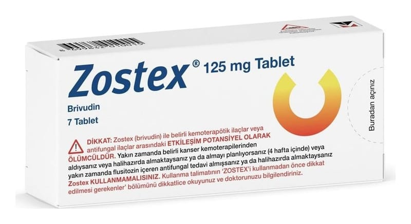

Zostex 125 mg Tablet, 7 Adet

Ne için kullanılır
KT · Bölüm 1ZOSTEX etkin madde olarak brivudin içerir. ZOSTEX antiviral etkiye sahiptir ve zonaya neden olan virüsün (varicella-zoster virüsü) çoğalmasını durdurur.
ZOSTEX, immün sistemi (vücudun bağışıklık sistemi) normal olan erişkinlerde zonanın (herpes zoster) erken dönem tedavisinde kullanılır.
ZOSTEX kenarları eğimli, beyaz ila beyaza yakın çift düzlemli tabletlerdir.
ZOSTEX 1 ve 7 tablet içeren kutular ile her biri 7 tablet içeren 5 kutudan oluşan çoklu kutu halinde mevcuttur. Ancak tüm ambalaj formları pazarlanmayabilir.